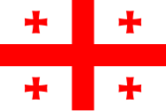

Georgia (Georgian: საქართველო, romanized: sakartvelo, IPA: [sakʰartʰʷelo] ⓘ) is a transcontinental country in Eastern Europe[10][11][12] and West Asia. It is part of the Caucasus region, bounded by the Black Sea to the west, Russia to the north and northeast, Turkey to the southwest, Armenia to the south, and Azerbaijan to the southeast. Georgia covers an area of 69,700 square kilometres (26,900 sq mi).[13] It has a population of 3.7 million,[b][14] of which over a third live in the capital and largest city, Tbilisi. Georgians, who are native to the region, constitute a majority of the country's population and are its titular nation.
